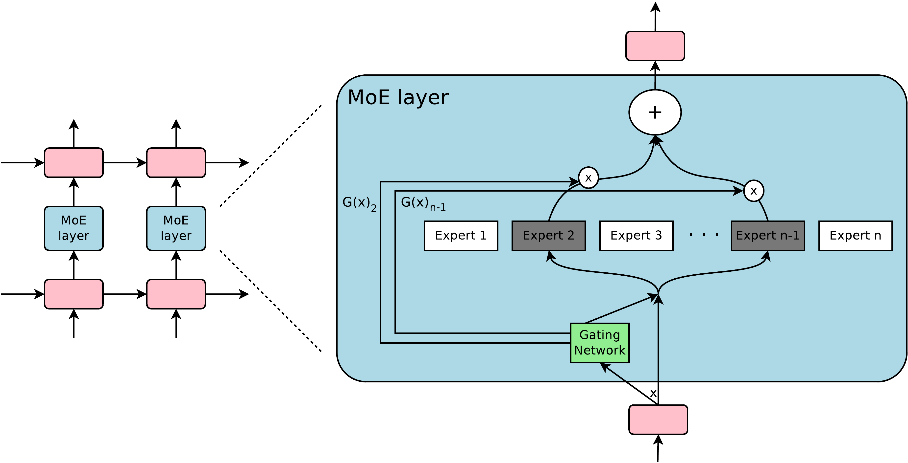
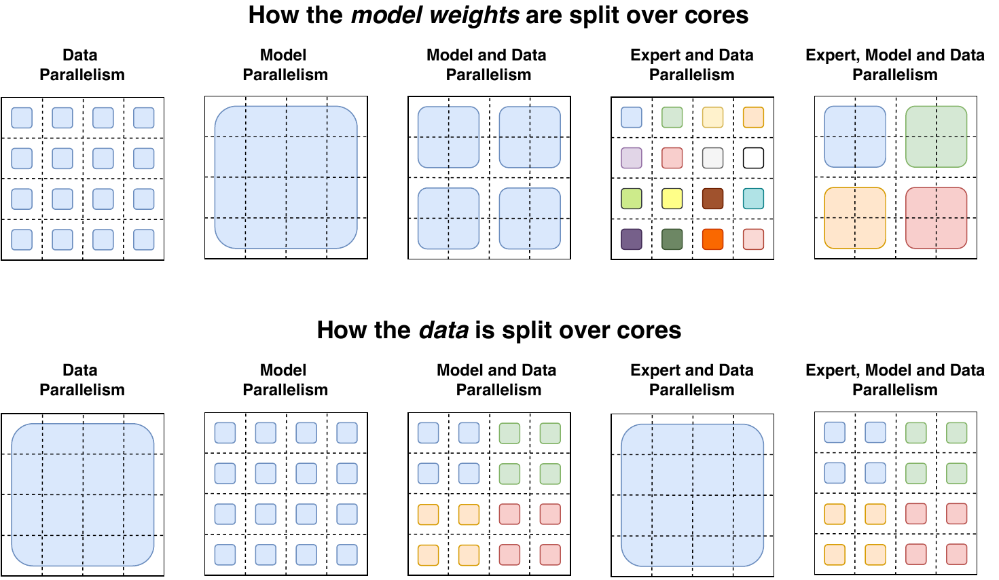
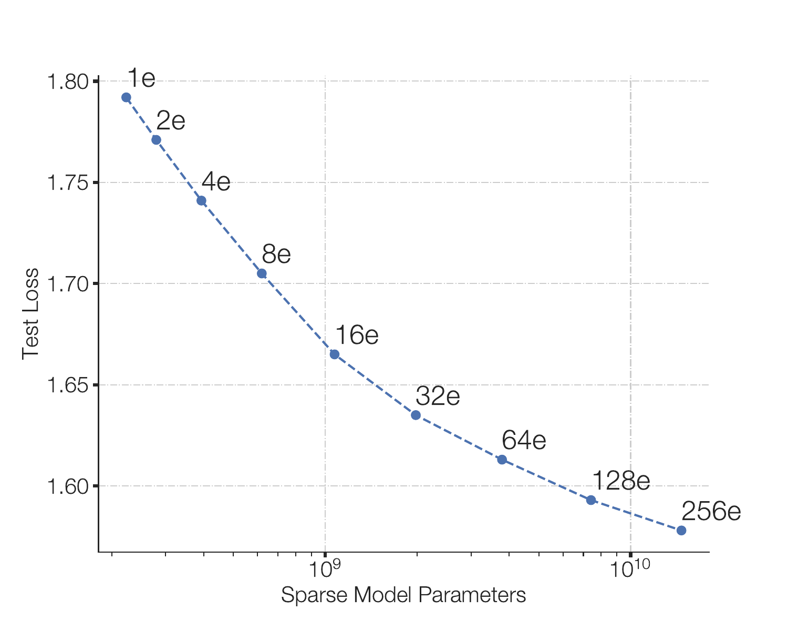
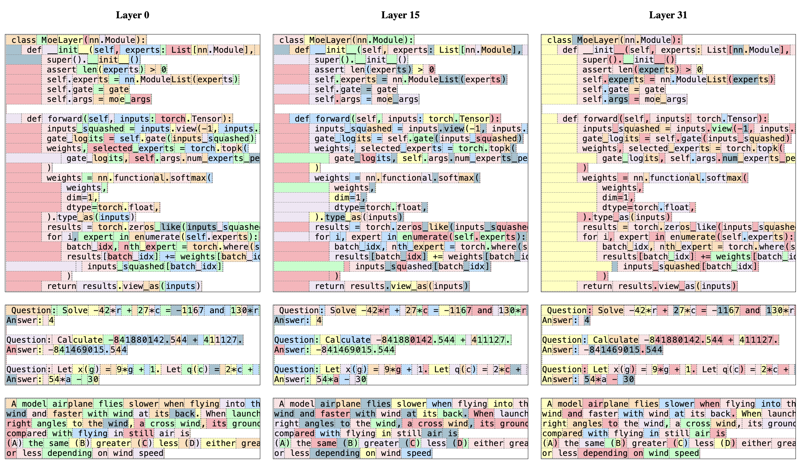
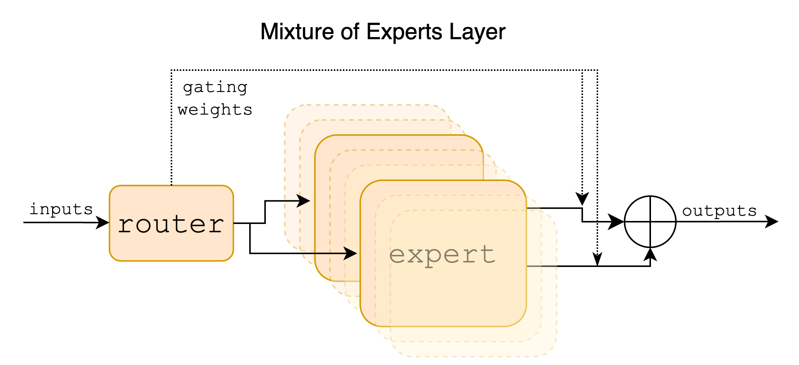
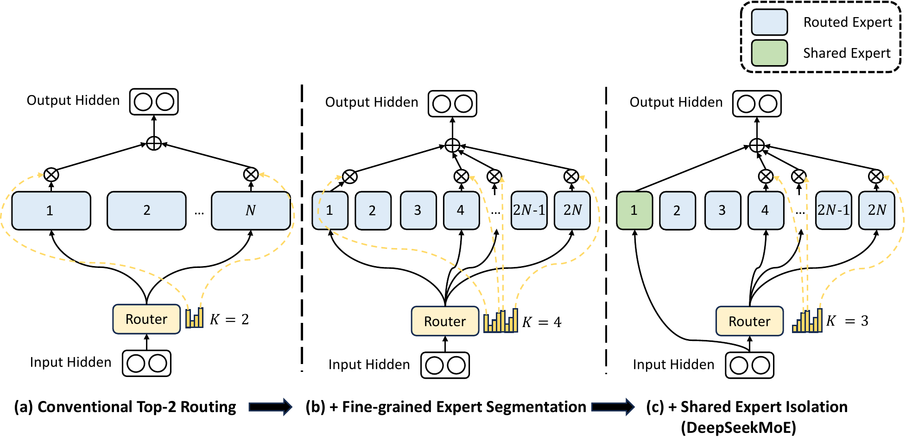

An interactive explainer
Mixture of Experts: from a 1991 committee to trillion-parameter LLMs
You don't ask one doctor every question — you go to a specialist. The largest language models now work the same way: a router sends each token to a few expert sub-networks and ignores the rest. This one idea lets a model hold trillions of parameters while spending the compute of a small one. It is also thirty years old. This is the story of how a 1991 statistical trick became the routing layer inside Mixtral and DeepSeek — and why it quietly broke the link between how big a model is and how much it costs to run.

Every neural network faces a tension. We know that bigger models are smarter — more parameters mean more capacity to store knowledge and patterns. But bigger models are also slower and costlier, because a dense network runs every one of its weights on every input. Double the parameters, double the compute. That coupling is the wall that scaling keeps running into.
Mixture of experts (MoE) is the oldest and most successful way around it. The idea: instead of one giant network that does everything, build many smaller expert networks and a small router that decides, per input, which handful of experts to consult. The model can then carry an enormous number of parameters — but each input only touches a few of them. Knowledge grows; cost per token barely moves.
We'll start in 1991, where this was a tidy idea in statistics, and follow it as it scales: through the 2017 paper that made it sparse and gigantic, through the Switch Transformer that put it inside the architecture that runs modern AI, to Mixtral and DeepSeek — the MoEs you can download today.
1. The original mixture of experts (1991)
The idea is due to Jacobs, Jordan, Nowlan, and Hinton, in a paper with a wonderfully blunt title: Adaptive Mixtures of Local Experts. Their motivation was divide and conquer. If a task has distinct regimes — different kinds of inputs needing different kinds of processing — then forcing one network to handle all of them creates interference: learning one regime degrades another. Better to let several networks each specialize, and learn a manager that routes each input to the right one.
Concretely: keep $n$ expert networks $E_1,\dots,E_n$ and a gating network $G$. The gate looks at the input $x$ and produces a set of weights — how much to trust each expert — and the output is their weighted sum:
$$ y \;=\; \sum_{i=1}^{n} G(x)_i \, E_i(x), \qquad G(x) = \Softmax(x \cdot W_g). $$
The gate is just a softmax: a learnable linear map from the input to a probability distribution over experts. Crucially, the experts and the gate are trained together, end to end. As training proceeds, a beautiful division of labor emerges on its own. If expert 3 happens to do well on a certain input, the gradient pushes the gate to send similar inputs to expert 3 — which makes expert 3 better at them still. The experts compete for inputs, and the gate learns to partition the input space into regions of specialization.
You can watch that partition form below. Each expert "owns" a region of the input space; the gating softmax blends smoothly between them at the borders. Drag the experts around and watch the territory redraw — this soft, learned partitioning is the entire conceptual seed of everything that follows.
2. The catch — and the dream of conditional computation
Look again at $y=\sum_i G(x)_i E_i(x)$. To compute that sum, the classical mixture runs all $n$ experts and weights them. So a mixture of 1000 experts costs 1000 times as much as one expert. It buys you specialization, but it buys you nothing on the compute wall — it is still a dense model in disguise.
But stare at the equation and the escape hatch is right there. Wherever $G(x)_i = 0$, the term vanishes — and you never needed to compute $E_i(x)$ at all. If the gate could output mostly zeros, picking only a few experts per input, you would run only those few. The model could hold a thousand experts' worth of parameters but spend the compute of two.
This is conditional computation: making the network's own activations decide which parts of the network to execute. It decouples the two things we always assumed were welded together — the number of parameters (capacity, knowledge) and the amount of compute per input (cost). The widget below makes the decoupling concrete: add experts and watch total parameters climb, while the compute per token — set by how many experts you actually fire, $k$ — stays flat.
The catch — and it is the catch that took years to tame — is that a hard top-$k$ choice is a discontinuous, combinatorial decision sitting in the middle of a model you want to train with smooth gradients. Making that work at scale is what the next paper cracked.
3. Sparsely-gated MoE: outrageously large networks
In 2017, Shazeer and colleagues at Google delivered the breakthrough in a paper titled Outrageously Large Neural Networks. They took the classical mixture, made the gate sparse, and scaled the expert count into the thousands — building a layer with up to 137 billion parameters at a time when large models had a few hundred million.
The mechanism is noisy top-$k$ gating. Score the experts, keep only the top $k$, send the rest to $-\infty$ so the softmax zeroes them out, and add a little learned Gaussian noise to the scores to help exploration and balancing:
$$ G(x) = \Softmax\big(\KeepTopK(H(x),\,k)\big), $$
$$ H(x)_i = (x \cdot W_g)_i + \mathcal{N}(0,1)\cdot \Softplus\big((x \cdot W_{\text{noise}})_i\big). $$
$$ \KeepTopK(v,k)_i = \begin{cases} v_i & \text{if } v_i \text{ is among the top } k \text{ of } v, \\ -\infty & \text{otherwise.} \end{cases} $$
Only the chosen $k$ experts (the paper used $k=4$, sometimes $2$) are ever evaluated, so a forward pass through a 137-billion-parameter layer costs about the same as a forward pass through a few hundred million. The experts were inserted between stacked LSTM layers, and called once per word — so a sentence threads through a different little committee at every position. The animation below is the whole idea moving: a token reaches the layer, the router lights up its top experts, their outputs combine, and — the punchline — adding experts grows the parameters without growing the cost per token.
Routing, then scaling. A token is scored by the router and sent through only its top-2 experts; the rest stay dark. Then the expert count explodes from 8 to 2048 (parameters from ~47B to ~1.6T) while the compute per token — fixed at top-2 — never moves. Parameters and compute, finally unwelded.
4. The load-balancing problem
Sparse routing has a failure mode baked into it, and it is the single most important practical problem in all of MoE. Remember how specialization is self-reinforcing: an expert that gets chosen gets trained, which makes it better, which makes it get chosen more. In the dense 1991 setting that was a feature. In the sparse setting it is a death spiral. A few experts win early, grab all the traffic, and improve; the rest are starved of gradient, never improve, and are never picked again. The model collapses onto a handful of experts and all the rest are dead weight.
The fix is an auxiliary load-balancing loss added to the training objective, whose only job is to push traffic to spread out evenly. Shazeer's version penalizes the imbalance in how much total gate weight each expert receives across a batch — using the squared coefficient of variation (standard deviation over mean), which is zero exactly when all experts are used equally:
$$ \text{Importance}(X) = \sum_{x \in X} G(x), \qquad L_{\text{importance}} = w \cdot \CV\big(\text{Importance}(X)\big)^2. $$
Toggle that loss on and off below. Without it, you'll watch the rich-get-richer collapse happen in real time — a couple of bars shoot up, the rest flatline. With it, the router is gently forced to keep every expert busy. Every MoE since has carried some descendant of this loss; it is the price of admission for sparse routing.
5. MoE meets the Transformer: Switch & GShard
The sparse MoE layer was powerful but fiddly. The Switch Transformer (Fedus, Zoph & Shazeer, 2021) simplified it and married it to the architecture that now runs everything. The move is clean: inside a Transformer block, replace the dense feed-forward network (FFN) with an MoE layer of expert FFNs, and route each token to it. Most of a Transformer's parameters live in those FFNs, so this is where the capacity-vs-compute trade has the most leverage.
Switch's headline simplification: route each token to exactly one expert — top-1. Prior wisdom held you needed $k \ge 2$ for the router to get useful gradients (you need to compare experts to learn to choose). Switch showed top-1 works fine, halves the routing and communication cost, and trains more stably. The output keeps the gate value as a multiplier so gradients still flow to the router:
$$ y = p_i(x)\, E_i(x), \qquad i = \arg\max_j p_j(x), \qquad p(x) = \Softmax(W_r\, x). $$
With hard routing on real batches, experts need a fixed-size buffer. Switch defines an expert capacity, and any tokens beyond it are dropped — passed to the next layer untouched through the residual connection:
$$ \text{expert capacity} = \frac{\text{tokens per batch}}{\text{number of experts}} \times \text{capacity factor}. $$
The capacity factor is a dial: higher means fewer dropped tokens but more wasted compute on half-empty buffers; lower means tighter buffers but more drops. Play with it below — it is the core efficiency knob of token-routed MoE.
Switch also swapped Shazeer's two-part balancing loss for a single differentiable one — minimized when tokens and router probability are both spread evenly across the $N$ experts:
$$ L = \alpha\,N \sum_{i=1}^{N} f_i \, P_i, \qquad \alpha = 10^{-2}, $$
where $f_i$ is the fraction of tokens sent to expert $i$ and $P_i$ is the average router probability assigned to it. With a few more stabilizers — running the router in float32, smaller initialization — Switch scaled to 1.6 trillion parameters (the 2048-expert Switch-C) and trained up to 7× faster than a compute-matched dense T5. MoE had gone from a curiosity to a scaling strategy.


6. The models you can download: Mixtral & DeepSeek
By 2024, MoE was the open-weights state of the art. Mixtral 8×7B (Mistral AI) put 8 expert FFNs in every Transformer block and routed each token to the top 2. The arithmetic is the whole pitch: 8 experts make ~47B total parameters, but only 2 fire per token, so ~13B are active — the speed of a 13B model with much of the knowledge of a far larger one. It matched or beat the dense Llama-2-70B while doing roughly a fifth of the work:
$$ y = \sum_{i \in \Top\text{-}2} \Softmax\big(\Top\text{-}2(x \cdot W_g)\big)_i \cdot \SwiGLU_i(x). $$
A surprise lived in Mixtral's routing. You might expect experts to specialize by topic — a biology expert, a code expert. They don't. The routing is nearly identical across wildly different domains; what specialization exists is syntactic and positional — the router tends to send structural tokens (indentation, keywords) and runs of consecutive tokens to the same expert. The experts are specialists of form, not subject.

DeepSeek-MoE pushed expert specialization further with two ideas. First, fine-grained experts: chop each expert into several smaller ones and route to more of them. Routing 6-of-64 small experts instead of 2-of-8 large ones keeps the compute identical but explodes the number of expert combinations the router can compose — from a handful to billions — letting knowledge be carved up far more precisely. Second, shared experts: set aside a few experts that are always on, for every token, to absorb the common knowledge every token needs — so the routed experts don't each waste capacity re-learning the basics:
$$ y = \underbrace{\sum_{i=1}^{K_s} E_i(x)}_{\text{shared, always on}} \;+\; \underbrace{\sum_{i=K_s+1}^{mN} g_i\, E_i(x)}_{\text{routed, top-}k} \;+\; x. $$
DeepSeek-MoE 16B uses 2 shared plus 6-of-64 routed experts — 16.4B parameters, but only 2.8B active per token — and matches dense 7B models at roughly 40% of the compute. This shared-plus-fine-grained recipe became the template for the DeepSeek-V2/V3 frontier models.
One more idea worth meeting: who picks whom. Everything so far is token-choice — each token picks its top experts — which is exactly why load can pile onto a few experts and why we need the balancing loss. Expert-choice routing flips it: each expert picks its top tokens, up to its capacity. Balance becomes automatic — every expert takes exactly its share — at the cost that some tokens may get many experts and some none. Toggle between the two below.
7. Results: more model, same bill
Across two decades and three orders of magnitude, the same trade keeps paying off: spend parameters, not FLOPs. A few representative numbers from the line of work:
| Model | What it shows | MoE | Dense comparison |
|---|---|---|---|
| Sparse MoE (2017) | 1B Word perplexity (↓) | 28.0 | 30.6 (best published dense) |
| Switch-C (2021) | params · pretrain speed (↑) | 1.6T · ~7× | T5 dense (compute-matched) |
| Mixtral 8×7B (2024) | MMLU (↑) | 70.6% | 69.9% (Llama-2-70B, 5× active) |
| HumanEval / GSM8K (↑) | 40.2% / 74.4% | 29.3% / 69.6% (Llama-2-70B) | |
| DeepSeek-MoE 16B | compute vs dense 7B (↓) | ~40% | 100% (matches quality) |
Sources: Shazeer et al. 2017; Fedus et al. 2021; Jiang et al. 2024; Dai et al. 2024. "Active" parameters are those touched per token; Mixtral is 47B total / 13B active, DeepSeek-MoE 16.4B / 2.8B.


8. Why it works
Three forces, stacked, explain why MoE is everywhere now.
It breaks the parameters–compute link
A dense model spends compute proportional to its size. MoE spends compute proportional to the active size — the experts actually fired — while capacity scales with the total size. Since much of what a large model knows is sparse, niche facts that most tokens never need, storing them in experts you rarely touch is exactly the right shape for the problem.
Specialization reduces interference
The original 1991 motivation never went away. Different inputs want different processing; making them share every weight forces compromises. Routing lets experts carve up the work — even if, as Mixtral showed, the carving is more about syntactic structure than tidy human topics. DeepSeek's fine-grained and shared experts are a direct attempt to make that division of labor cleaner: shared experts hold the common core, fine-grained routed experts hold the specifics.
The hard part is routing, and we learned to tame it
Every gain rides on a discrete decision — which experts? — that fights smooth training. The history of MoE is really the history of taming that decision: noisy gates to explore, load-balancing losses to prevent collapse, capacity factors to bound the buffers, top-1 to simplify, expert-choice to guarantee balance. None of the scaling would have mattered if the router kept collapsing.
9. What it means
Mixture of experts is the clearest example in deep learning of an old, simple idea winning at a scale its inventors could not have imagined. "Route the input to specialists and combine their answers" was a tidy bit of 1991 statistics. Sparsify the routing and it becomes the only known way to keep growing a model's knowledge without growing its per-token cost in lockstep — which is why the largest models you can name are now, almost all of them, mixtures of experts.
It is not free. You pay in memory (all those parameters must be stored and moved, even if not computed), in the all-to-all communication of shuffling tokens to their experts across devices, and in the perennial fragility of routing. But the central bet — that a model can be enormous in what it knows and modest in what it spends per token — has been validated at every scale from a 1991 toy to a trillion parameters.
Open problems
- Memory, not compute, is the new wall. MoE trades FLOPs for parameters, but those parameters still have to fit in (and move through) hardware. Serving a sparse trillion-parameter model is a systems problem as much as a modeling one.
- Routing is still brittle. Load balancing, token dropping, and training instability remain active research. Expert-choice and loss-free balancing schemes are recent attempts to do better.
- What should an expert be? Mixtral's syntactic routing suggests experts don't specialize the way we'd hope. Fine-grained and shared experts help; the ideal granularity is open.
The bottom line
For thirty years the size of a model and the cost of running it rose together, locked. Mixture of experts pried them apart: let the input choose a few specialists, ignore the rest, and a model can be a trillion parameters wide while costing a few billion to run. The committee of experts you met in 1991 is now, quietly, doing the routing inside the models at the frontier.